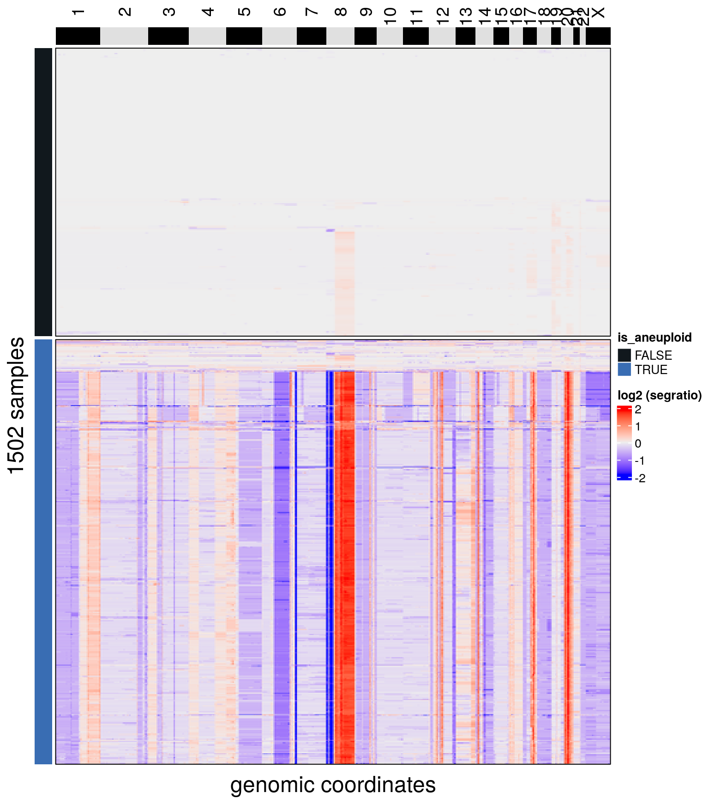
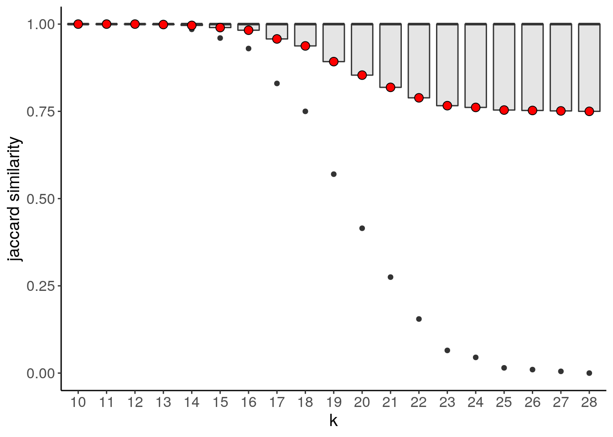
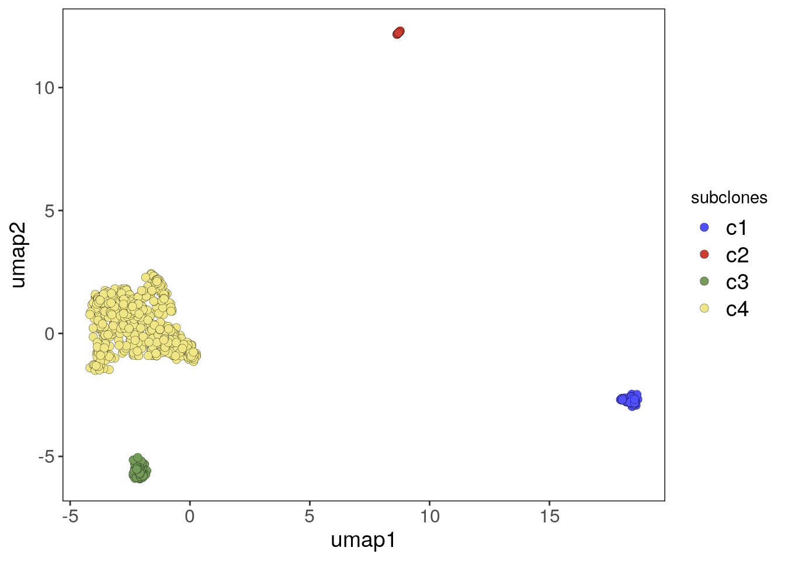

2 BL1 and BL2
Setup
suppressPackageStartupMessages(library(copykit))
library(patchwork)
library(rstatix)##
## Attaching package: 'rstatix'## The following object is masked from 'package:IRanges':
##
## desc## The following object is masked from 'package:stats':
##
## filtersuppressPackageStartupMessages(library(tidyverse))
library(ggrepel)
library(ggnewscale)
library(janitor)##
## Attaching package: 'janitor'## The following object is masked from 'package:rstatix':
##
## make_clean_names## The following objects are masked from 'package:stats':
##
## chisq.test, fisher.testFunctions to Calculate Shannon Diversity Indexes
shan <- function(data, indices) {
data_ind <- data[indices]
prop <- janitor::tabyl(data_ind) %>% pull(percent)
div <- -sum(prop*log(prop))
return(div)
}
shan_sample <- function(meta, group) {
meta_group <- meta %>%
filter(sectors == !!group)
group_perc <- janitor::tabyl(as.character(meta_group$subclones)) %>% pull(percent)
group_div <- -sum(group_perc*log(group_perc))
# Check for sectors composed of a unique subclone
if (group_div == 0) {
df <- data.frame(foci = group,
div = 0,
lci = 0,
uci = 0)
return(df)
}
shan_group_boot <-
boot::boot(
as.character(meta_group$subclones),
statistic = shan,
R = 2000
)
shan_group_boot_ci <- suppressWarnings(boot::boot.ci(shan_group_boot))
df <- data.frame(foci = group,
div = group_div,
lci = shan_group_boot_ci$normal[2],
uci = shan_group_boot_ci$normal[3])
}2.1 BL1
2.1.1 Filtering
bl1 <- runVarbin("/mnt/lab/users/dminussi/projects/CopyKit_Manuscript_Code/datasets/BL1/marked_bams/", remove_Y = T)## Counting reads for genome hg38 and resolution: 220kb## 34 bam files had less than 10 mean bincounts and were removed.## Performing GC correction.## Smoothing bin counts.## Running segmentation algorithm: CBS for genome hg38## Merging levels.## Done.# Finding diploid cells and sub-setting the copykit object
bl1 <- findAneuploidCells(bl1)## number of iterations= 28## Copykit detected 607 that are possibly euploid cells using a resolution of: 0.069## Added information to colData(CopyKit).plotHeatmap(bl1, label = c('is_aneuploid'),
row_split = 'is_aneuploid',
n_threads = 50)## Ordering by consensus requires cluster information.## Switching to hclust.## No distance matrix detected in the scCNA object.## Calculating distance matrix with metric: euclidean## Using 50 cores.## Access distance matrix with copykit::distMat()## Done.## Plotting Heatmap.
bl1 <- bl1[,colData(bl1)$is_aneuploid == TRUE]
# Finding low-quality cells
bl1 <- findOutliers(bl1)## Calculating correlation matrix.## Marked 102 cells as outliers.## Adding information to metadata. Access with colData(scCNA).## Done.plotHeatmap(bl1, label = c('outlier'),
row_split = 'outlier',
n_threads = 50)## Ordering by consensus requires cluster information.## Switching to hclust.## No distance matrix detected in the scCNA object.## Calculating distance matrix with metric: euclidean## Using 50 cores.## Access distance matrix with copykit::distMat()## Done.## Plotting Heatmap.# obtaining metrics and plotting
bl1 <- runMetrics(bl1)## Calculating overdispersion.## Warning in selectChildren(jobs, timeout): error 'No child processes' in select## Counting breakpoints.## Done.bl1_p_metrics <- plotMetrics(
bl1,
metric = c(
"reads_total",
"percentage_duplicates",
"overdispersion",
"breakpoint_count"
), label = 'outlier',
dodge.width = 0.8,
ncol = 2
) + scale_fill_manual(values = c("TRUE" = "#DA614D",
"FALSE" = "#5F917A"))## Coloring by: outlier## Scale for 'fill' is already present. Adding another scale for 'fill', which will replace the existing scale.bl1_p_metrics
# calculating averages from the colData information and statistics
bl1_metrics <- as.data.frame(colData(bl1))
bl1_metrics %>%
summarise(reads_total_mean = mean(reads_total),
reads_total_sd = sd(reads_total),
percent_dup_mean = mean(percentage_duplicates),
percent_dup_sd = sd(percentage_duplicates)
)## reads_total_mean reads_total_sd percent_dup_mean percent_dup_sd
## 1 1035783 246883 0.08147598 0.009734118bl1_metrics %>% as.data.frame() %>%
rstatix::kruskal_test(overdispersion ~ outlier)## # A tibble: 1 × 6
## .y. n statistic df p method
## * <chr> <int> <dbl> <int> <dbl> <chr>
## 1 overdispersion 895 3.95 1 0.047 Kruskal-Wallisbl1_metrics %>% as.data.frame() %>%
rstatix::kruskal_test(breakpoint_count ~ outlier)## # A tibble: 1 × 6
## .y. n statistic df p method
## * <chr> <int> <dbl> <int> <dbl> <chr>
## 1 breakpoint_count 895 63.2 1 1.87e-15 Kruskal-Wallis# removing low-quality cells
bl1 <- bl1[,colData(bl1)$outlier == FALSE]2.1.2 UMAP and clustering
# Running UMAP and storing into the copykit object
bl1 <- runUmap(bl1)## Using assay: logr## Embedding data with UMAP. Using seed 17## Access reduced dimensions slot with: reducedDim(scCNA, 'umap').## Done.# Grid Search of Jaccard Similarity (cluster stability)
bl1 <- findSuggestedK(bl1)## Calculating jaccard similarity for k range: 10 11 12 13 14 15 16 17 18 19 20 21 22 23 24 25 26 27 28## ## Suggested k = 10 with median jaccard similarity of: 1bl1_primary_suggestedK_p <- plotSuggestedK(bl1)
bl1_primary_suggestedK_p
# Finding clusters using the suggested k value as per default settings,
# can be changed with the argument k_subclones
bl1 <- findClusters(bl1)## Using suggested k_subclones = 10## Finding clusters, using method: hdbscan## Found 4 subclones.## Done.# Plotting UMAP colored by subclones
bl1_umap_p <- plotUmap(bl1, label = 'subclones')## Plotting Umap.## Coloring by: subclones.bl1_umap_p
# Calculating consensus matrix and consensus phylo,
# this will be used by copykit to order the subclones on the heatmap
bl1 <- calcConsensus(bl1)
bl1 <- runConsensusPhylo(bl1)2.1.3 Subclones Heatmap
# Plotting copy number heatmap and annotating with subclones
plotHeatmap(bl1, label = c('subclones'))## Plotting Heatmap.
# Adding macro-spatial information from file names to colData
# and renaming to (S)ectors
colData(bl1)$sectors <- stringr::str_extract(colData(bl1)$sample, "(L[0-9]+L[0-9]+|L[0-9]+)")
colData(bl1)$sectors <- stringr::str_replace_all(colData(bl1)$sectors,
"L", "S")
# Plotting the UMAP colored by sectors
bl1_umap_sectors_p <- plotUmap(bl1, label = 'sectors')## Plotting Umap.## Coloring by: sectors.bl1_umap_sectors_p
# Creating pie charts plots of the proportions of clones on each sector
bl1_focis <- unique(colData(bl1)$sectors)
bl1_foci_pies <- list()
for (i in seq_along(bl1_focis)) {
df <- as.data.frame(colData(bl1)) %>%
dplyr::filter(sectors == bl1_focis[i])
bl1_foci_pies[[i]] <- ggplot(df) +
geom_bar(aes(x = "", y = sectors, fill = subclones),
stat = 'identity') +
theme_void() +
scale_fill_manual(values = subclones_pal(),
limits = force) +
coord_polar(theta = "y") +
ggtitle(bl1_focis[i])
}
wrap_plots(bl1_foci_pies)# Setting up a theme for the next plot
my_theme <- list(
ggplot2::theme(
axis.title.x = element_text(colour = "gray28", size = 20),
axis.text.x = element_blank(),
axis.ticks.x = element_blank(),
axis.title.y = element_text(colour = "gray28", size = 20),
axis.text.y = element_blank(),
axis.ticks.y = element_blank(),
axis.line = element_blank(),
legend.text = element_text(size = 14),
panel.border = element_rect(fill = NA, color = 'black')
),
xlab("umap1"),
ylab("umap2")
)
# Plotting the UMAP colored by sector and using ggrepel to label the subclones
bl1_lfoci_umap <- as.data.frame(reducedDim(bl1, 'umap'))
bl1_lfoci_umap$sectors <- colData(bl1)$sectors
bl1_lfoci_umap$subclones <- as.character(colData(bl1)$subclones)
# Avoiding overplotting of text
bl1_lfoci_umap$subclones <- ifelse(!duplicated(bl1_lfoci_umap$subclones),
bl1_lfoci_umap$subclones, "")
bl1_lfoci_umap_p <- ggplot(bl1_lfoci_umap, aes(V1, V2, label = subclones)) +
geom_point(aes(fill = sectors), shape = 21,
stroke = 0.1,
size = 2.5) +
ggnewscale::new_scale_fill() +
geom_text_repel(aes(color = subclones),
min.segment.length = 0,
box.padding = 0.01,
size = 4,
max.overlaps = Inf,
na.rm = T) +
scale_color_manual(values = subclones_pal(),
limits = force) +
theme_classic() +
my_theme
bl1_lfoci_umap_p
# Plotting consensus heatmap with a frequency annotation of sectors by
# subclone and annotating genes of interest
plotHeatmap(bl1, label = 'subclones', consensus = T, group = 'sectors',
genes = c(
"FHIT",
"CUX1",
"WWOX",
"FOXO1",
"APC",
"BCL2",
"KRAS",
"PGR",
"PDGFRA",
"ROS1",
"PTPN11",
"CCND1",
"BTG1",
"FGFR3",
"PTEN",
"FGFR2"
))## Plotting Heatmap.
# Calculating Diversity Indexes by sector
bl1_meta <- colData(bl1)
bl1_meta <- as.data.frame(bl1_meta)
bl1_meta <- bl1_meta[c('subclones', 'sectors')]
bl1_L1_div <- shan_sample(bl1_meta, "S1")
bl1_L2_div <- shan_sample(bl1_meta, "S2")
bl1_L3_div <- shan_sample(bl1_meta, "S3")
bl1_L4L5_div <- shan_sample(bl1_meta, "S4S5")
bl1_L6L7_div <- shan_sample(bl1_meta, "S6S7")
bl1_L8L9_div <- shan_sample(bl1_meta, "S8S9")
bl1_div <- bind_rows(
bl1_L1_div,
bl1_L2_div,
bl1_L3_div,
bl1_L4L5_div,
bl1_L6L7_div,
bl1_L8L9_div
)
# Plotting Shannon Diversity Index
bl1_div_p <- bl1_div %>%
ggplot() +
geom_errorbar(aes(
x = fct_reorder(foci, div),
ymin = lci,
ymax = uci
),
width = .1,
size = 1) +
geom_point(aes(
x = fct_reorder(foci, div),
y = div,
color = foci
), size = 5) +
cowplot::theme_cowplot() +
theme(legend.position = "none",
axis.text.x = element_text(
angle = 90,
vjust = 0.5,
hjust = 1
)) +
scale_y_continuous(breaks = scales::pretty_breaks(n = 12)) +
ylab("shannon diversity index") +
xlab("") +
coord_flip()
bl1_div_p
2.2 BL2
2.2.1 Filtering
bl2 <- runVarbin("/mnt/lab/users/dminussi/projects/CopyKit_Manuscript_Code/datasets/BL2/marked_bams/", remove_Y = T)## Counting reads for genome hg38 and resolution: 220kb## 61 bam files had less than 10 mean bincounts and were removed.## Performing GC correction.## Smoothing bin counts.## Running segmentation algorithm: CBS for genome hg38## Merging levels.## Done.# Finding diploid cells and sub-setting the copykit object
bl2 <- findAneuploidCells(bl2)## number of iterations= 24## Copykit detected 100 that are possibly euploid cells using a resolution of: 0.068## Added information to colData(CopyKit).plotHeatmap(bl2, label = c('is_aneuploid'),
row_split = 'is_aneuploid',
n_threads = 50)## Ordering by consensus requires cluster information.## Switching to hclust.## No distance matrix detected in the scCNA object.## Calculating distance matrix with metric: euclidean## Using 50 cores.## Access distance matrix with copykit::distMat()## Done.## Plotting Heatmap.bl2 <- bl2[,colData(bl2)$is_aneuploid == TRUE]
# Finding low-quality cells
bl2 <- findOutliers(bl2)## Calculating correlation matrix.## Marked 108 cells as outliers.## Adding information to metadata. Access with colData(scCNA).## Done.plotHeatmap(bl2, label = c('outlier'),
row_split = 'outlier',
n_threads = 50)## Ordering by consensus requires cluster information.## Switching to hclust.## No distance matrix detected in the scCNA object.## Calculating distance matrix with metric: euclidean## Using 50 cores.## Access distance matrix with copykit::distMat()## Done.## Plotting Heatmap.
# obtaining metrics and plotting
bl2 <- runMetrics(bl2)## Calculating overdispersion.## Counting breakpoints.## Done.bl2_p_metrics <- plotMetrics(
bl2,
metric = c(
"reads_total",
"percentage_duplicates",
"overdispersion",
"breakpoint_count"
), label = 'outlier',
dodge.width = 0.8,
ncol = 2
) + scale_fill_manual(values = c("TRUE" = "#DA614D",
"FALSE" = "#5F917A"))## Coloring by: outlier## Scale for 'fill' is already present. Adding another scale for 'fill', which will replace the existing scale.bl2_p_metrics
# calculating averages from the colData information and statistics
bl2_metrics <- as.data.frame(colData(bl2))
bl2_metrics %>%
summarise(reads_total_mean = mean(reads_total),
reads_total_sd = sd(reads_total),
percent_dup_mean = mean(percentage_duplicates),
percent_dup_sd = sd(percentage_duplicates)
)## reads_total_mean reads_total_sd percent_dup_mean percent_dup_sd
## 1 975057.5 303911.9 0.08932727 0.01065848bl2_metrics %>% as.data.frame() %>%
rstatix::kruskal_test(overdispersion ~ outlier)## # A tibble: 1 × 6
## .y. n statistic df p method
## * <chr> <int> <dbl> <int> <dbl> <chr>
## 1 overdispersion 1375 32.9 1 0.00000000978 Kruskal-Wallisbl2_metrics %>% as.data.frame() %>%
rstatix::kruskal_test(breakpoint_count ~ outlier)## # A tibble: 1 × 6
## .y. n statistic df p method
## * <chr> <int> <dbl> <int> <dbl> <chr>
## 1 breakpoint_count 1375 0.928 1 0.335 Kruskal-Wallis# removing low-quality cells
bl2 <- bl2[,colData(bl2)$outlier == FALSE]2.2.2 UMAP and clustering
# Running UMAP and storing into the copykit object
bl2 <- runUmap(bl2)## Using assay: logr## Embedding data with UMAP. Using seed 17## Access reduced dimensions slot with: reducedDim(scCNA, 'umap').## Done.# Grid Search of Jaccard Similarity (cluster stability)
bl2 <- findSuggestedK(bl2)## Calculating jaccard similarity for k range: 10 11 12 13 14 15 16 17 18 19 20 21 22 23 24 25 26 27 28 29 30 31 32 33 34 35 36## ## Suggested k = 11 with median jaccard similarity of: 0.928bl2_primary_suggestedK_p <- plotSuggestedK(bl2)
bl2_primary_suggestedK_p
# Finding clusters using the suggested k value as per default settings,
# can be changed with the argument k_subclones
bl2 <- findClusters(bl2)## Using suggested k_subclones = 11## Finding clusters, using method: hdbscan## Found 62 outliers cells (group 'c0')## Found 19 subclones.## Done.# HDBSCAN is an outlier aware clustering algorithm
# in this analysis all cells marked as outliers (c0) from hdbscan are excluded.
bl2 <- bl2[,colData(bl2)$subclones != 'c0']
# Plotting UMAP colored by subclones
bl2_umap_p <- plotUmap(bl2, label = 'subclones')## Plotting Umap.## Coloring by: subclones.bl2_umap_p
# Calculating consensus matrix and consensus phylo,
# this will be used by copykit to order the subclones on the heatmap
bl2 <- calcConsensus(bl2)
bl2 <- runConsensusPhylo(bl2)2.2.3 Subclones Heatmap
# Plotting copy number heatmap and annotating with subclones
plotHeatmap(bl2, label = c('subclones'))## Plotting Heatmap.
# Adding macro-spatial information from file names to colData
# and renaming to (S)ectors
colData(bl2)$sectors <- stringr::str_extract(colData(bl2)$sample,
"L[0-9]+")
colData(bl2)$sectors <- stringr::str_replace(colData(bl2)$sectors,
"L", "S")
# Plotting the UMAP colored by sectors
bl2_umap_sectors_p <- plotUmap(bl2, label = 'sectors')## Plotting Umap.## Coloring by: sectors.bl2_umap_sectors_p
# Creating pie charts plots of the proportions of clones on each sector
bl2_focis <- unique(colData(bl2)$sectors)
bl2_foci_pies <- list()
for (i in seq_along(bl2_focis)) {
df <- as.data.frame(colData(bl2)) %>%
dplyr::filter(sectors == bl2_focis[i])
bl2_foci_pies[[i]] <- ggplot(df) +
geom_bar(aes(x = "", y = sectors, fill = subclones),
stat = 'identity') +
theme_void() +
scale_fill_manual(values = subclones_pal(),
limits = force) +
coord_polar(theta = "y") +
ggtitle(bl2_focis[i])
}
wrap_plots(bl2_foci_pies)
# Setting up a theme for the next plot
my_theme <- list(
ggplot2::theme(
axis.title.x = element_text(colour = "gray28", size = 20),
axis.text.x = element_blank(),
axis.ticks.x = element_blank(),
axis.title.y = element_text(colour = "gray28", size = 20),
axis.text.y = element_blank(),
axis.ticks.y = element_blank(),
axis.line = element_blank(),
legend.text = element_text(size = 14),
panel.border = element_rect(fill = NA, color = 'black')
),
xlab("umap1"),
ylab("umap2")
)
# Plotting the UMAP colored by sector and using ggrepel to label the subclones
bl2_lfoci_umap <- as.data.frame(reducedDim(bl2, 'umap'))
bl2_lfoci_umap$sectors <- colData(bl2)$sectors
bl2_lfoci_umap$subclones <- as.character(colData(bl2)$subclones)
# Avoiding overplotting of text
bl2_lfoci_umap$subclones <- ifelse(!duplicated(bl2_lfoci_umap$subclones),
bl2_lfoci_umap$subclones, "")
bl2_lfoci_umap_p <- ggplot(bl2_lfoci_umap, aes(V1, V2, label = subclones)) +
geom_point(aes(fill = sectors), shape = 21,
stroke = 0.1,
size = 2.5) +
ggnewscale::new_scale_fill() +
geom_text_repel(aes(color = subclones),
min.segment.length = 0,
box.padding = 0.01,
size = 4,
max.overlaps = Inf,
na.rm = T) +
scale_color_manual(values = subclones_pal(),
limits = force) +
theme_classic() +
my_theme
bl2_lfoci_umap_p# Plotting consensus heatmap with a frequency annotation of sectors
# by subclone and annotating genes of interest
plotHeatmap(bl2, label = 'subclones', consensus = T, group = 'sectors',
genes = c(
"CCND1",
"TP53",
"GATA1",
"SOX2",
"ERBB2",
"MYC",
"RB1",
"PIK3CA",
"MMP3",
"BRCA1",
"BRCA2",
"FHIT"
))## Plotting Heatmap.
# Calculating Diversity Indexes by sector
bl2_meta <- colData(bl2)
bl2_meta <- as.data.frame(bl2_meta)
bl2_meta <- bl2_meta[c('subclones', 'sectors')]
bl2_L1_div <- shan_sample(bl2_meta, "S1")
bl2_L4_div <- shan_sample(bl2_meta, "S4")
bl2_L5_div <- shan_sample(bl2_meta, "S5")
bl2_L6_div <- shan_sample(bl2_meta, "S6")
bl2_L7_div <- shan_sample(bl2_meta, "S7")
bl2_div <- bind_rows(
bl2_L1_div,
bl2_L4_div,
bl2_L5_div,
bl2_L6_div,
bl2_L7_div
)
# Plotting Shannon Diversity Index
bl2_div_p <- bl2_div %>%
ggplot() +
geom_errorbar(aes(
x = fct_reorder(foci, div),
ymin = lci,
ymax = uci
),
width = .1,
size = 1) +
geom_point(aes(
x = fct_reorder(foci, div),
y = div,
color = foci
), size = 5) +
cowplot::theme_cowplot() +
theme(legend.position = "none",
axis.text.x = element_text(
angle = 90,
vjust = 0.5,
hjust = 1
)) +
scale_y_continuous(breaks = scales::pretty_breaks(n = 12)) +
ylab("shannon diversity index") +
xlab("") +
coord_flip()
bl2_div_p
The following code analysis the breast metastatic sample with metastasis to the liver and to the pleural effusion. This works as an example on how to employ CopyKit for the analysis of multiple datasets.